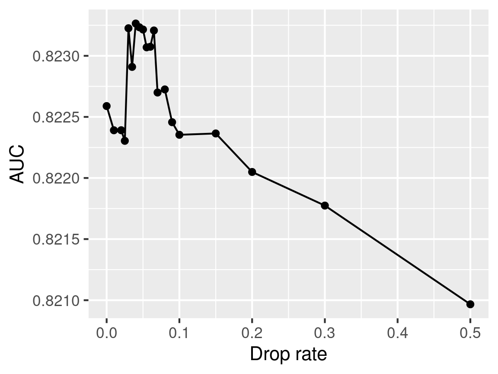
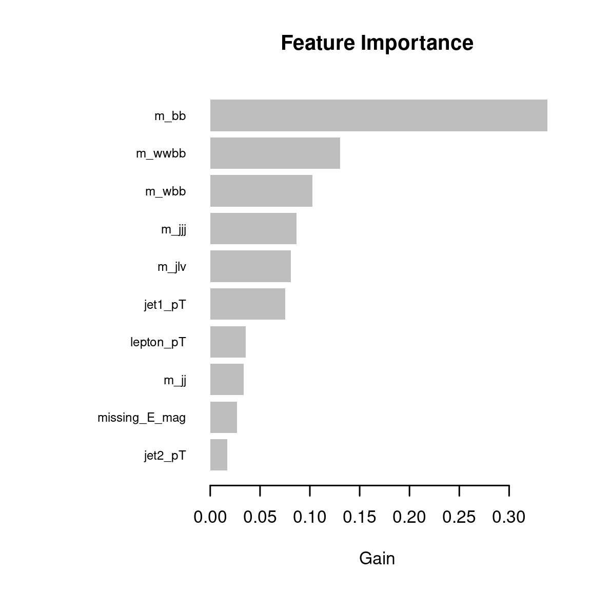

Chapter 3 lightgbm
We will use lightgbm’s implementation of the Dart algorithm for boosted regression trees with
dropouts. The benefit of Dart compared to similar algorithms is that it avoids
over-specialization, in which later trees “tend to impact the prediction of only a few instances”
(Korlakai Vinayak and Gilad-Bachrach 2015). The following code plots AUC against the dropout rate (i.e., the ratio of
trees dropped at each dropout) for the Dart algorithm as applied to our training data
with 3-fold validation:
# Drop rates
dr <- c(0, 0.01, 0.02, seq(0.025, 0.07, 0.005), 0.08, 0.09, 0.1, 0.15, 0.2, 0.3, 0.5)
# Although we are not using tensorflow here, this is a convenience function
# to set multiple seeds across R and Python (i.e. reticulate)
tensorflow::set_random_seed(42, disable_gpu = F)
if (!file.exists('cache/gbm_results.RData')) {
# Train
gbm_scores <- sapply(dr, function(d) {
gc()
params <- list(
num_threads = 32, # hardware-dependent
boosting = "dart",
metric = "auc",
learning_rate = 1.0, # found to be a good value, too large leads to instability
seed = 42, # note, any other seeds with default values take priority
drop_rate = d
)
gbmodel <- lgb.cv(
params, x, label = y,
nrounds = 100, nfold = 3, obj = 'binary', verbose = 0
)
gbmodel$best_score
})
# Save
save(gbm_scores, file = 'cache/gbm_results.RData')
}
load('cache/gbm_results.RData')
tensorflow::set_random_seed(42, disable_gpu = F)tibble(dr,gbm_scores) |>
ggplot(aes(dr,gbm_scores)) +
geom_line() +
geom_point() +
xlab('Drop rate') +
ylab('AUC') +
theme_gray()
cat('The best AUC of', max(gbm_scores),
'is achieved with a drop rate of', dr[which.max(gbm_scores)], '.\n')## The best AUC of 0.8232643 is achieved with a drop rate of 0.04 .Note, however, that the AUC is at least 0.823 for a drop rate between 0.04 and 0.065:
min(gbm_scores[between(dr,0.04,0.065)])## [1] 0.82306953.1 lightgbm model with optimized drop rate
We recompute the lightgbm model using the best drop rate found above:
tensorflow::set_random_seed(42, disable_gpu = F)
if (!file.exists('cache/gbm_results_2.RData')) {
# Get the best drop rate from before
best_dr <- dr[which.max(gbm_scores)]
# Train the model again
params <- list(
num_threads = 32, # hardware-dependent
boosting = "dart",
metric = "auc",
learning_rate = 1.0, # found to be a good value, too large leads to instability
seed = 42, # note, any other seeds with default values take priority
drop_rate = best_dr
)
gbmodel <- lgb.train(
params, lgb.Dataset(x, label = y),
nrounds = 100, obj = 'binary', verbose = 0
)
# Compute AUC
auc_lgb_best <- auc(y,predict(gbmodel,x)) |> as.numeric()
# Save AUC and model
save(auc_lgb_best, gbmodel, file='cache/gbm_results_2.RData')
cat(lgb.dump(gbmodel), file='cache/lgb_model.json') # (almost) human-readable version
}
load('cache/gbm_results_2.RData')
lgb.restore_handle(gbmodel) # if model is needed, we need to fully restore it
tensorflow::set_random_seed(42, disable_gpu = F)The AUC of the model on the training set is:
auc_lgb_best## [1] 0.82492383.2 Feature importance
The following code plots the feature importance of the ten most important features in the HIGGS dataset, based on the trained model results:
par(cex=0.7)
gbmodel |> lgb.importance() |> lgb.plot.importance(top_n = 10)
It is shown that the top five features are all “high-level” features. However, several of the
low-level features relating to transverse momentum also appear in the top ten. Finally, none
of the directional (‘_eta’ or ‘_phi’) low-level parameters appear in the top ten important
features.